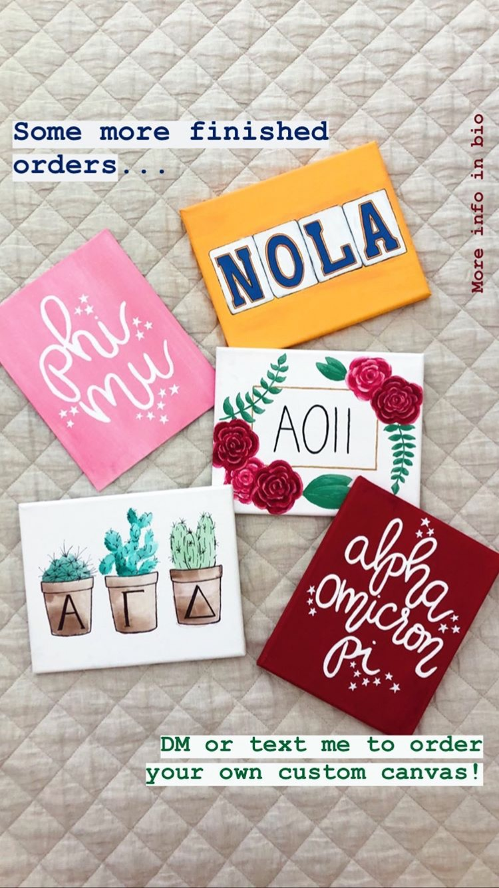
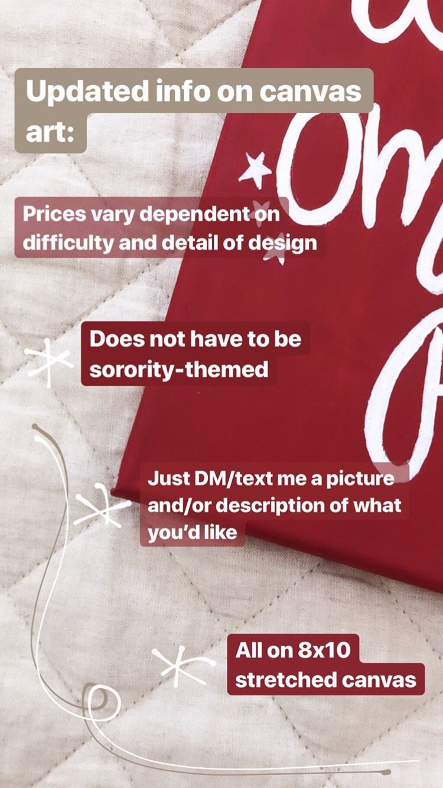
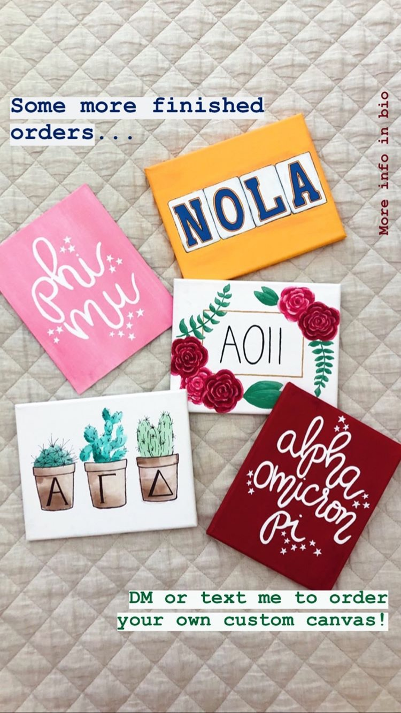
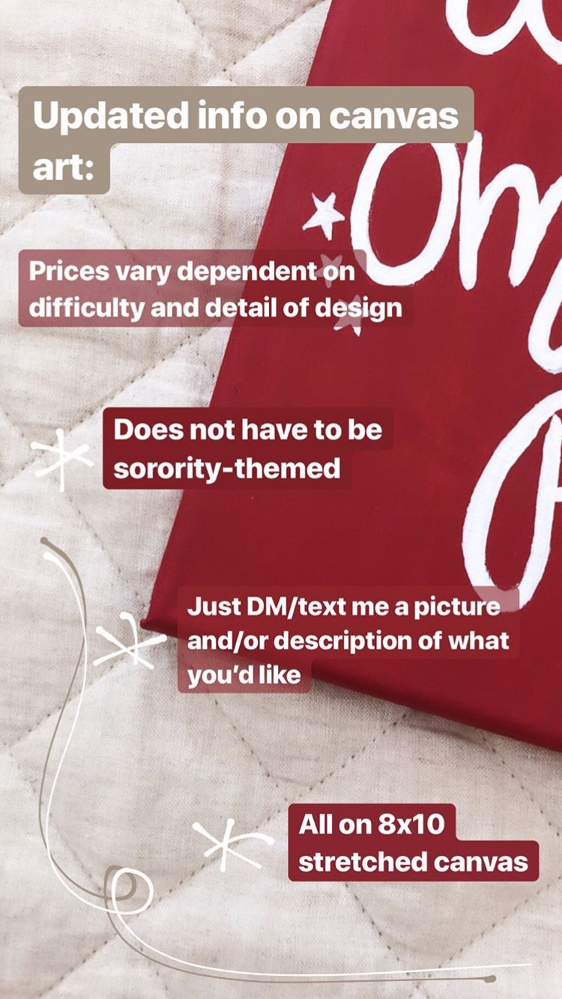

My skills in communication and analysis stem from my creative, intuitive mind. I have excelled in not only my English and language classes (both in college and before), but also in many other settings such as leadership positions, due to my ability to analyze and communicate effectively.
I have been able to use my communication skills both inside the classroom and out:
I love to explore the arts of visual expression. My favorite medium is pencil, but I also enjoy using acrylic, watercolor, colored pencil, charcoal, and pen. In fact, I used my skills to create my own business this summer, in which I sold custom acrylic paintings. Customers would send me a picture or an idea of what they wanted via internet, and I would paint it on a canvas for them. My target market was sorority girls thinking about the big/little process approaching in the fall, but I also reached people outside of that market.

 



Most of my art experience and skills are from training in classical art, but I am now also learning the art of computer graphics. My ability to create visual design would be very valuable in any kind of media production job.